Database mode¶
The kmviz interface is divided into 4 major areas:
- Input
- Database/Query selector
- Tab selector
- Main window
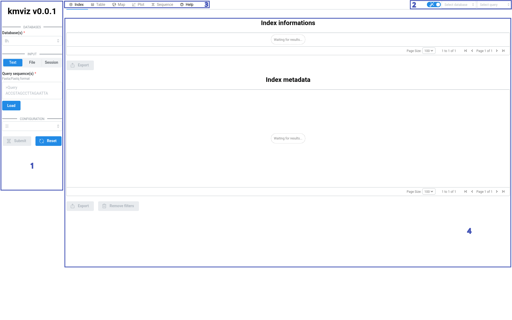
1.Input¶
Select database(s)¶
kmviz will send the query to the selected databases.
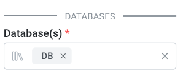
For each selected databases, you can change the configuration. In this example, DB uses kmindex-server which allows two query options: z and coverage. For details see kmindex documentation.
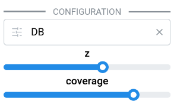
Import query¶
The query sequence(s) should be provided in Fasta/Fastq format, by copy-pasting or directly importing a file. The fastx identifiers are used as query id in the results.
When submitting a query, you receive a unique session id that can be used later to reload your results without query the databases again. The session id is a 42 characters string that matches kmviz-[a-fA-Z1-9]{8}-[a-fA-Z1-9]{4}-[a-fA-Z1-9]{4}-[a-fA-Z1-9]{4}-[a-fA-Z1-9]{12}, e.g. kmviz-1fb396fd-96f2-45ba-bd78-fd23fde9921e.
The 3 import layouts, file, text and session are illustrated below.
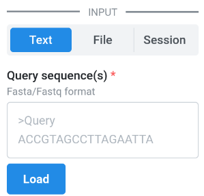
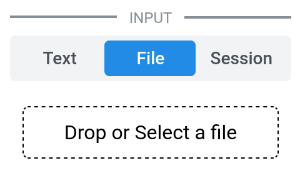
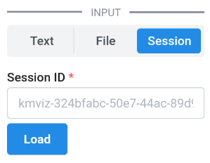
Submit¶
The Submit button triggers the query and pops up a notification, as shown below, with your session id.
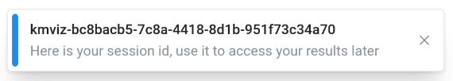
The Reset button simply reloads the page to perform a new query.
2. Database/Query selector¶
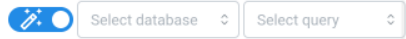
kmviz can display results for only one pair of database/query at a time. Database and query are selectable using these two dropdown selectors located at the top right corner.
The blue switch allows to enable auto update on maps and plots. For details see this section.
3. Tab selector¶
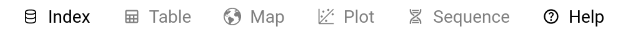
- Index: Display information about the selected database
- Table: A table of metadata corresponding to the selected database/query
- Map: Make maps from selected metadata
- Plot: Make plots from selected metadata
- Sequence: Display query coverage for a pair sample/query
- Help: Help page
When a plugin provides a new layout, it appears as a new tab. See layout plugin.
4. Main¶
Index tab¶
The Index tab shows information about the index selected by the Database selector:
- The top table contains various index information, e.g. number of samples, version, etc.
- The bottom table corresponds the complete metadata table.
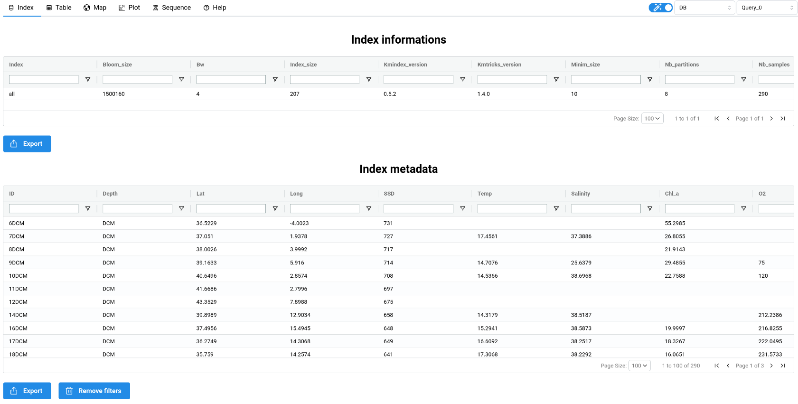
Table tab¶
The Table tab shows a sub-table of metadata corresponding to the hits for the query selected by the Query selector.
Important
These data are used to make all the representations, e.g. maps, which means that a filter applied on the table will be reflected on the figures. Note that this works both ways: selecting some points on the map will be reflected on the table.
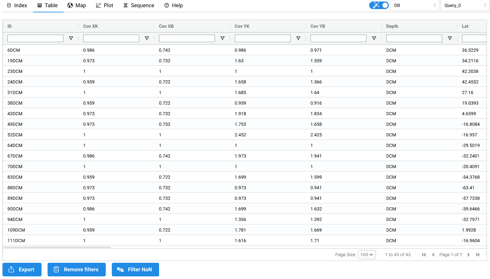
Sequence tab¶
The Sequence tab shows a plot representing the query coverage for a pair of a Query and a Sample. The Query is selected by the Query selector while the Sample selector is available at the top of the tab.
Note
Click on a point on the map or the plot jumps to the Sequence tab and shows a coverage plot corresponding the selected point.
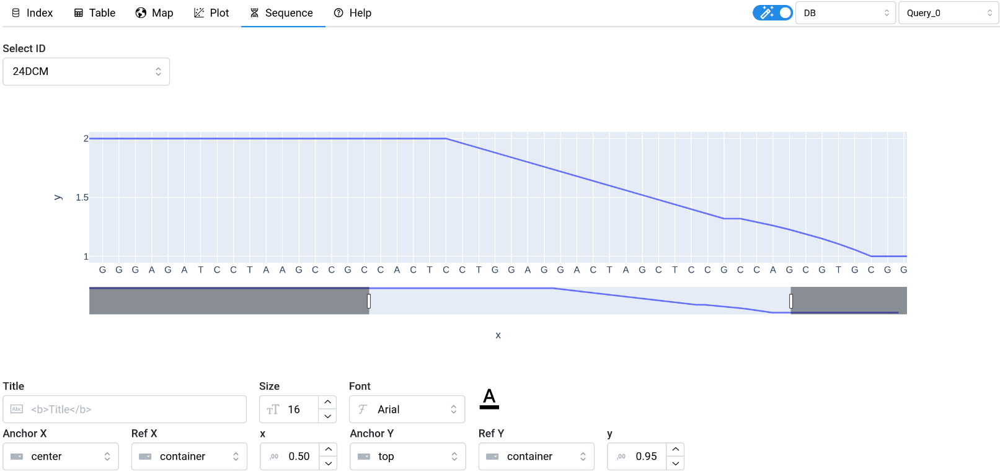
Help tab¶
Simply links to the documentation. Also displays plugin-specific help, when applicable, i.e. when some plugins are loaded and provide additional help.
Figures¶
Maps and plots are produced using plotly and we follow the naming of plot properties. This means that you can follow the plotly documentation to learn more about each available property. The documentation links for each map and plot types supported by kmviz are provided in next sections Maps and Plots.
When making figures, there are 2 types of action: those that create a new figure (Map tab for maps and Trace tab for plots), e.g. change the plot type, and those that update the figure, e.g. change the title. The blue switch (see Query selector) at the top right corner allows to enabled/disabled the auto updates. When enabled, all properties corresponding to update actions are automatically applied when the figure is modified. For example, if you set a title, then change the plot type, the title remains. When disabled, changing a property value only triggers a change for this property.
This part of the documentation is still under construction. Below are a few documentation links and screenshots. The best way to learn how to use the interface is probably to play with the Plot-Only mode.
Map Tab¶
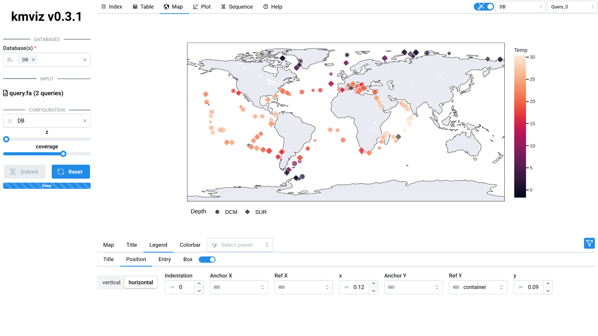
Documentation links: Map
Plot Tab¶
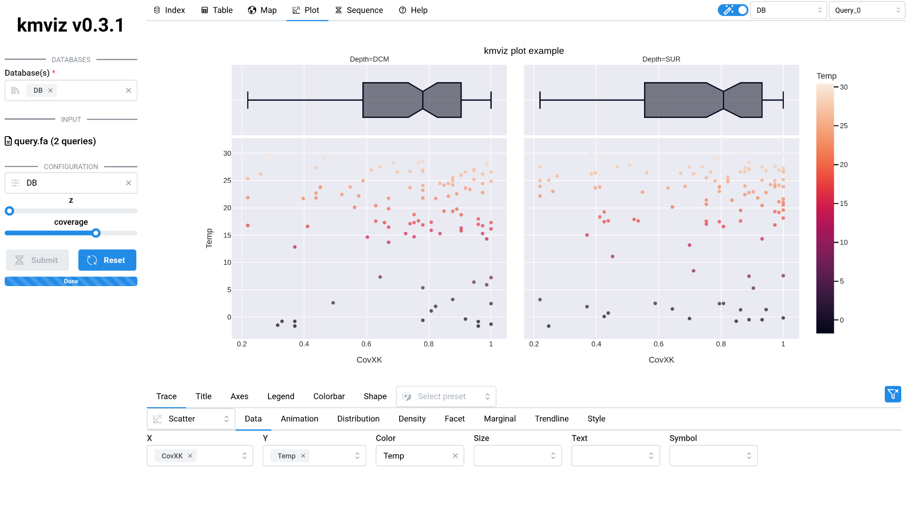
Documentation links: Scatter, Line, Area, Bar, Parallel categories, Parallel coordinates, Scatter matrix, Density heatmap, Density contour, Violin, Box